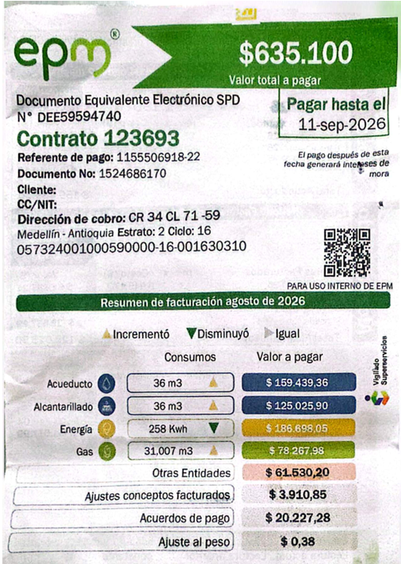
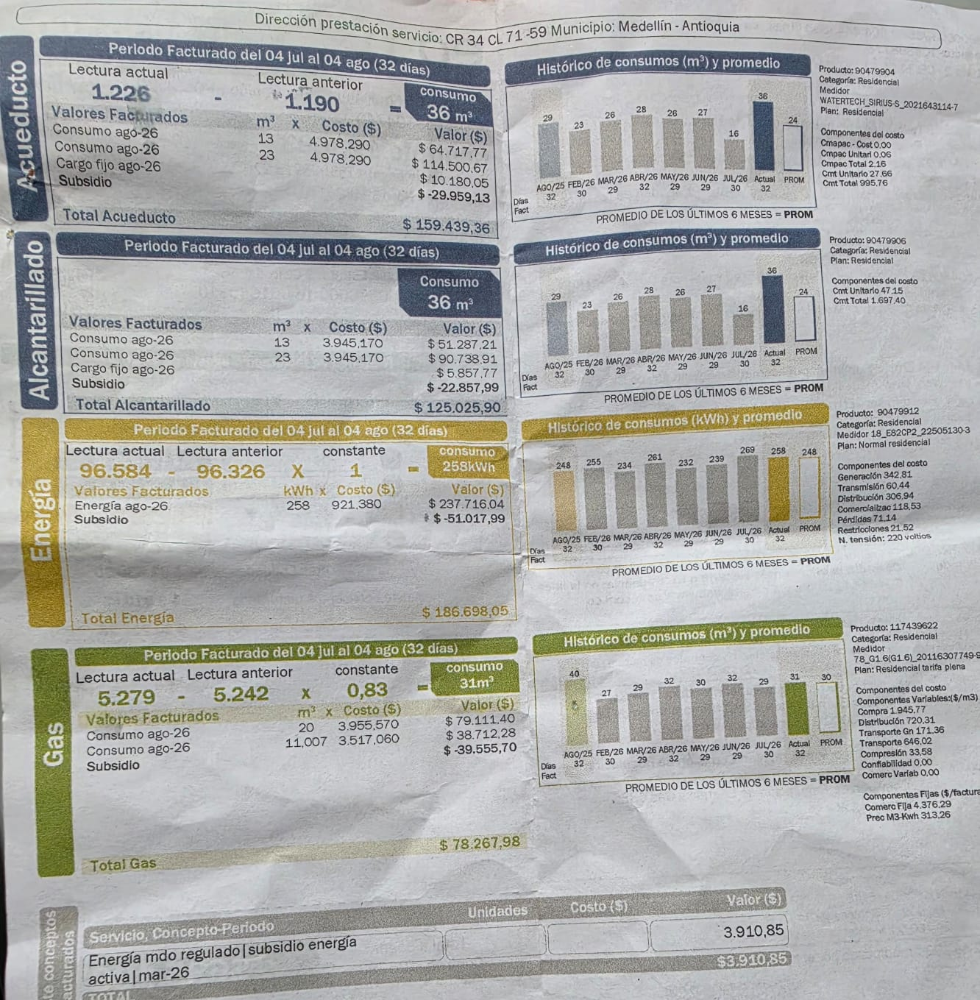

Historial de consumo (Según mi factura)
Estos son los consumos registrados en mi factura de EPM para el periodo de Agosto de 2026:
| Servicio | Consumo | Valor pagado (COP) |
|---|---|---|
| Energía | 258 kWh | $186.698,05 |
| Gas | 31 m³ | $78.267,98 |
| Acueducto | 36 m³ | $159.439,36 |
| Alcantarillado | 36 m³ | $125.025,90 |
| Total Factura | - | $635.100 |


¡Atención con la energía!
El consumo de energía de 258 kWh es elevado. Si lo comparamos con la tabla de electrodomésticos, la energía de la factura es muchísimo mayor.
Esto se debe a que en mi tabla de aparatos no incluí la ducha eléctrica ni la estufa, que son los que disparan el consumo mensual.
Comparación y proyección
Mi proyección de electrodomésticos arrojó que gastamos unos 18.23 kWh semanales (unos 73 kWh al mes). Sin embargo, la factura real dice 258 kWh.
¿Por qué la diferencia? Porque en los 4 aparatos que registré no incluí los que más consumen: la ducha eléctrica y la plancha.
Mis recomendaciones de ahorro familiar
-
1
Reducir el tiempo de ducha: La ducha eléctrica es el aparato que más energía consume. Bañarse en menos tiempo bajará el recibo.
-
2
Revisar la nevera: Aunque la etiqueta dice que es eficiente, si la abrimos mucho o tiene los cauchos dañados, el motor trabajará el doble.
-
3
Cuidar el agua: Al reducir el tiempo en la ducha y usar la lavadora llena, también reduciremos el pago del acueducto y alcantarillado.